在人间丨武汉年夜饭
原文链接 备份链接 本视频为今年的年三十，武汉父母与身在外地的孩子 隔空互送新年祝福 年夜饭，是中国人最看重的家庭宴会。1月24日，武汉封城第二天，年三十，有23个武汉人给我们分享了他们的年夜饭。 @王启明： 今天是武汉封城的第二天，也是 …
以下文章来源于地球青年图鉴 ，作者地青


“此刻的中国版图中，武汉好像是一座孤城，但实际上在这座孤城之内还有无数个孤城，有成千上万个原驻家庭把自己锁在家里，他们表面上安静祥和，心头却有一根线紧绷着。”受访者张恒写道。
我们采访了五位在武汉过年的青年人，聊了聊他们近期的经历，他们中有从北京、上海等地赶回到武汉过年的人，也有未曾离开的武汉本地人。
表面上安静祥和，
心头却有一根线紧绷着
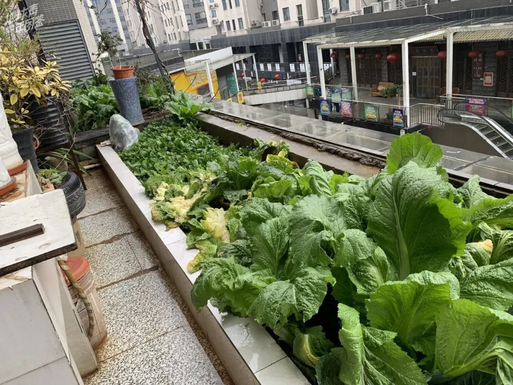
△ 爸爸在家种的菜
张恒（化名） 24岁 咖啡店店主 家住江夏区
我在上海和朋友一起经营咖啡店，12月30号在网上看到了那张流传的华南海鲜市场的通报，我当下的反应是马上找信息去看看，发现好像确实有这回事，赶紧发给在武汉的爸妈看，他们当时还不知道。
后来关于肺炎的消息越来越多，到1月20号的样子，身边的人都在劝我不要回家过年了，我当时还觉得也没什么，大家都很害怕，反而只有我这个武汉人不怕。
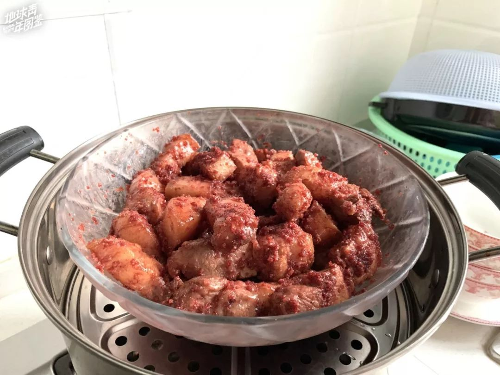
△ 妈妈做的菜
我心想，每年都只有过年才有时间回去看看爸爸妈妈，现在不回去，不知道等到什么时候了。家里还有很多腊鱼腊肉等着我，行李箱里已经包好了给爸妈的红包。所有人都劝我不要回去了，我真的不愿意不回去，我告诉他们没事的，就这样在1月22号下午抵达了武汉。
出了地铁，我看到爸妈在地铁口等着我，他们竟然没有带口罩，我当即就批评了他们，说心也太大了，爸妈玩笑着说没事的，一会儿就回家了。一路上我给爸妈说了很多关于这次肺炎的信息，现在的感染数据，口罩要怎么选、怎么戴，如何预防等等。
按照往年的习惯，我回来之后，一家的行程都是满满当当的，所以我有一点担心。果不其然，妈妈跟我说，明天就去外婆家。第二天一早，我打开手机就看到了武汉全城“封城”的消息，机场火车站关闭通道，公共交通都停止运营。出门前我把自己从上海带回来的口罩给爸妈，叫他们一定要戴上。

△ 爸爸从年前就开始雕刻的手串
离姥姥家不远，我们决定打滴滴去。大街上没有行人，只有零星的车跑着。这天打车不算太容易，早上十点，我们打上的时候已经是排在第六位，大概等待了半个小时才上车。爸妈坐在后面，我坐在副驾驶位置，还没坐稳，司机直接说，“要加价的”。
我一时没有反应过来，没想到在平台打车，司机还敢如此大胆。我很惊讶地说：“你还加价？你不怕我投诉你吗？”
司机更刚，“我都出来开滴滴了，我还怕你投诉？”爸妈坐在后面，我也不好继续再跟司机争执，想着本来打车也不容易，万一他不送我们就不好了。我不耐烦地说“好，走走走。”
包括司机在内，我们四个人全都戴着口罩，车开了一会儿，我注意到爸爸悄悄把车窗打开一条缝，很冷的风吹进来。

△ 年三十，妈妈在厨房准备做鱼。
年二十九的中午，在姥姥家，我们和大舅、二舅两家，勉强算是吃了一顿年夜饭。本来就因为亲戚之间有些许摩擦，大家只是“身体”出现在这张餐桌上。
没人打开话茬子，更没人聊起工作、学业和爱情，只有外公讲起他今天在电视上看到说有肺炎。我竟然吃过了一餐有些窃喜的年夜饭。那天下午我们赶在五点之前就回家了。
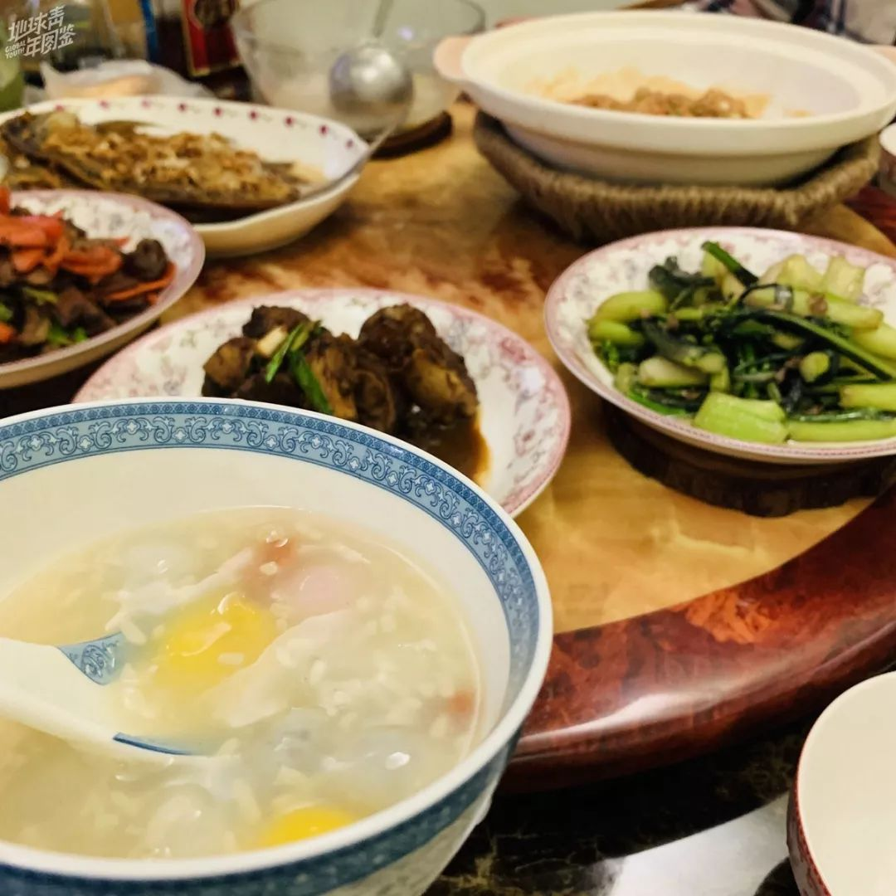
△ 年夜饭
除夕这天开始，爸妈对于肺炎的认知发生了一些变化，或许是封城让他们意识到了疫情有多严重。除夕夜，爸妈忙活了一下午，我们三个人五点多就吃上了。
春晚开始了，我们一家人坐在沙发上，边吐槽边大笑，在大家都不感兴趣的节目间隙，爸妈都在做两件事情。一件事是在各种社交平台抢红包、集卡片等，另一件事，就是爸妈一直在刷各种肺炎的文章及视频。
我听到爸爸刷到一个视频，大概是医护人员压力太大，视频中一位女医生传来绝望的叙述，在说“坚持不住了，太累了，不要指望有谁能救你”之类的话。爸爸看完了装得若无其事的样子，抬起头来看春晚。
那一刻，我甚至觉得爸妈在这次疫情中得到了过度的信息，某种程度上加重了他们的焦虑，当然，更不用说以他们的辨别能力，是否能判断信息的真假了。
在这个疫情泛滥的除夕节里，我们都努力保持克制冷静，叫自己学会坚强乐观。可是谁也不知道笑脸下的我们还能坚持多久。
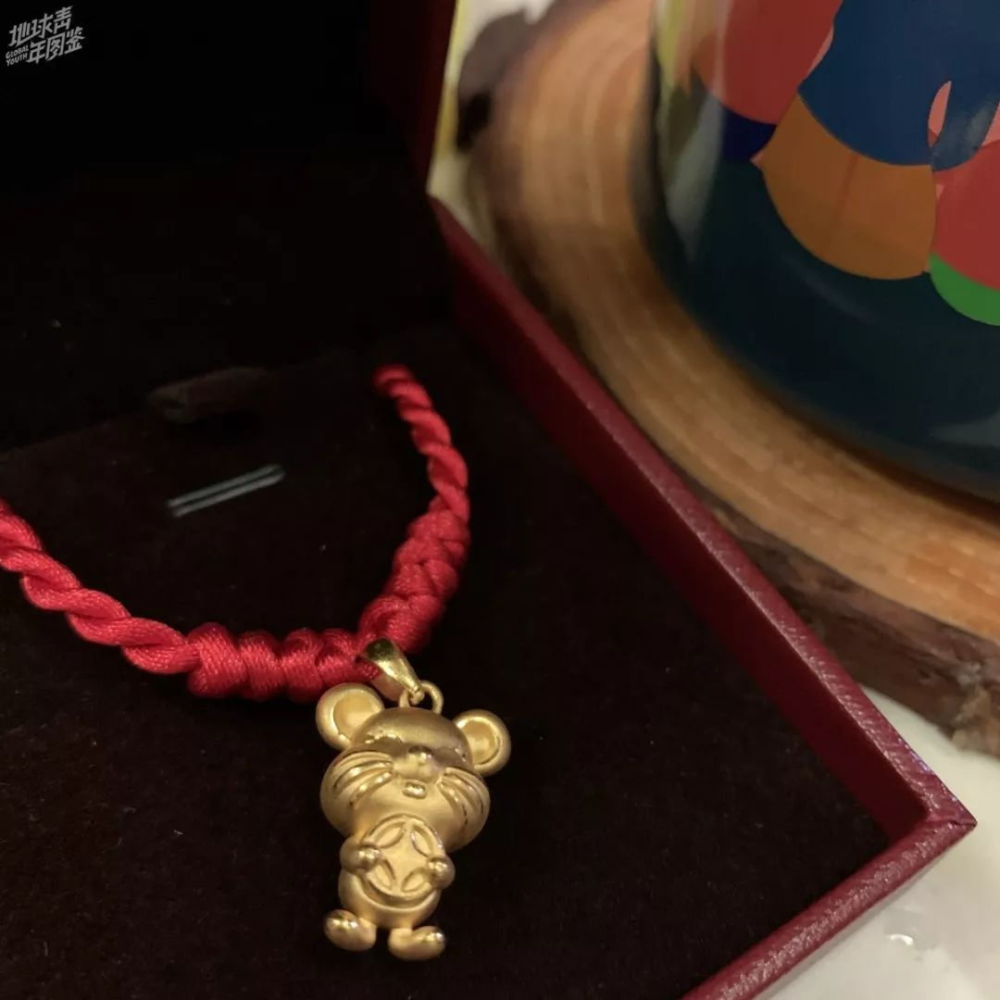
△ 今年是我的本命年，爸爸送了我金老鼠。
封城之后所有武汉人都变得更加谨慎，封城好像是有一双手把所有武汉人的头摁下来，让我们弯腰认错。不过也许我们确实应该认错。
回家这些天，虽然我也发了朋友圈告诉大家我在武汉了，但碰到不太熟的微信好友过来私信问我是不是在武汉的时候，我都是心头一紧，觉得他们是来凑热闹的，我都没有回复他们的信息。
此刻的中国版图中，武汉好像是一座孤城，但实际上在这座孤城之内还有无数个孤城，有成千上万个原驻家庭把自己锁在家里，他们表面上安静祥和，心头却有一根线紧绷着。
我很害怕等我回了上海，大家会不会因为我是从武汉来的，而跟我保持距离。哦对了，还不知道什么时候能出武汉呢。期待有更多好消息出来，疫情得到控制，治愈方法出来了，疫苗可以打了。
感冒了，我在家打游戏、撸猫
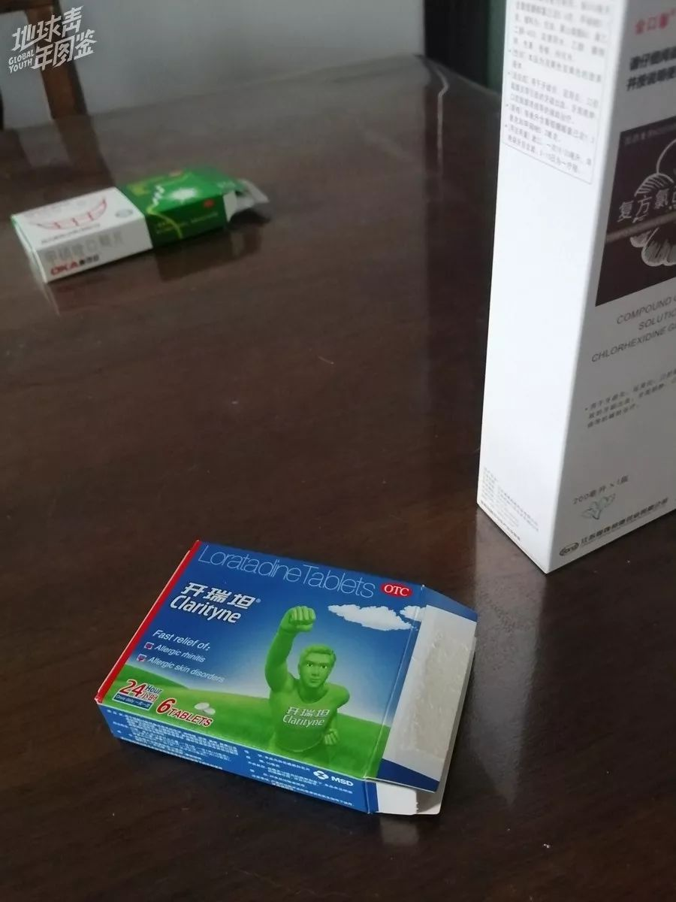
△ 我服用的感冒药
书尧 25岁 私募基金研究员 家住武昌区
我是在杭州工作的武汉人，目前在一家金融公司做私募基金研究员。以前每年都是回湖北过年，今年也不例外。
回武汉之前，我感冒了，在杭州看了医生，也开了药，不过我自己总是没按时吃药，就一直反复感冒。刚开始其实没太在意，看报道上宣传的传染性不如SARS，致死率也不高，而且当时显示的死亡病例大多是本身就有别的疾病，所以就直接回家了。
后来逐渐扩散到封城，自己也有点紧张了，看来比一开始想的要严峻很多。原计划回武汉之后再去赤壁老家，离武汉一个半小时车程的地方，最后只好取消了。
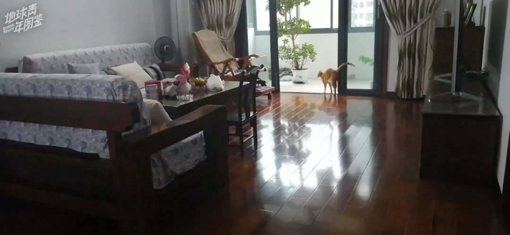
我一直呆在家里，没出过门，自己回来也没做什么准备，家里人都囤好物资了，蔬菜、肉、水，还有卫生用品都备得很齐。我感冒一直没好，还挺提心吊胆的，我都怀疑是不是已经转成一般肺炎了。
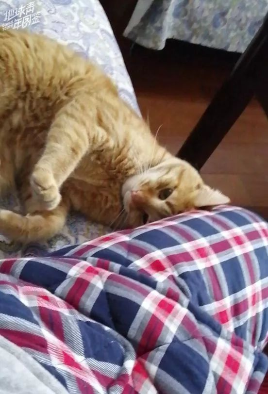

△ 年三十的下午，我约朋友一块线上打游戏。
因为怕在武汉的医院里交叉感染，就没去医院。在家约了几个朋友在steam上打游戏《命运2》，还有撸猫，养了三年的橘猫“毛豆”。

△ 我和妈妈一起包饺子
以前小时候过年回老家，一大家子看完春晚会围在木炭烧的火炉边，取暖、聊天、守岁，后来爷爷奶奶也搬城里来了，过年就是大家一块聚在家里吃个饭，春晚也不咋看了。这次算是失去了才知道珍惜？封城以后，反而感觉到过年的珍贵了，所以挺珍惜这几天，能多在家陪陪我妈和毛豆。
虽然生病了会比较担心，但这样简单的过年，感觉还是挺好的。因为我本身就比较宅，也不喜欢应酬和热闹。
除夕夜，我一个人在家自行观察
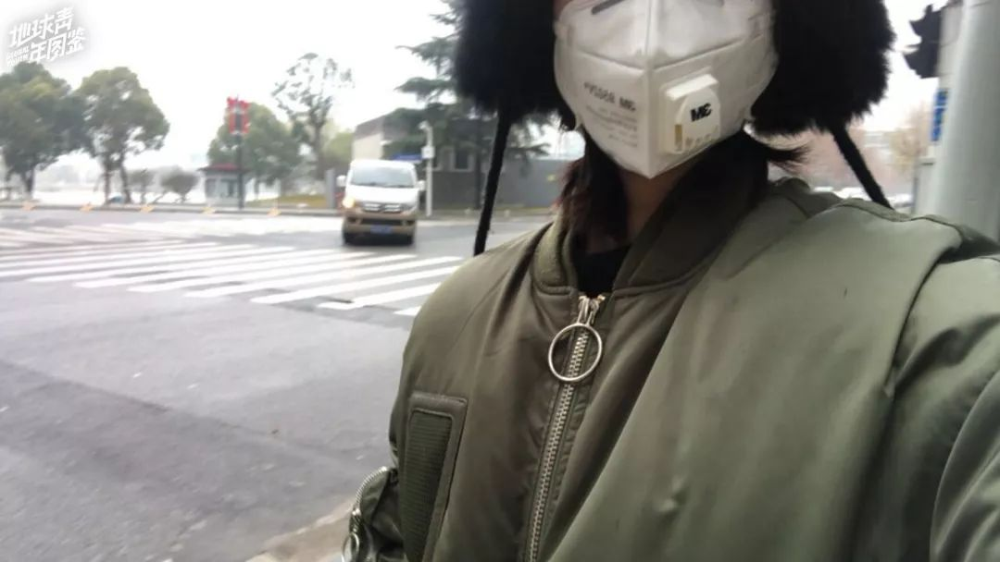
△ 21号，我戴着口罩出门。
妮子（化名） 25岁 舞蹈老师 家住江汉区
我是武汉人，在本地当舞蹈老师，我平时上课的地点就在汉口火车站旁边的写字楼。自从感觉到事态严重后，就没有出过门了，一直在家。
从去年12月到今年1月份上旬，基本都在上舞蹈课，刚开始听说新型冠状病毒的消息，其实并没有太放在心上。当时能看到的新闻都是叫大家不要担心，没有发现人传人的迹象。包括汉口火车站，也没看到任何防护措施。我也没怎么上心，生活节奏完全没有被影响。
一直到封城，这期间收到的信息越来越多，更多的是非官方的，一些武汉的群，或者是存活度不高的微博消息。直到封城的官方公告出来，心里直接慌神了，意识到有多严重。
封城的消息是23号凌晨两点发布的，我三点钟起床赶紧在App上下单囤货，买了一些速食品和好存放的蔬果。消毒水一直都抢不到，只能第二天全副武装出门找，但出门也要花费口罩和消毒水，家里的存货也已经见底了。
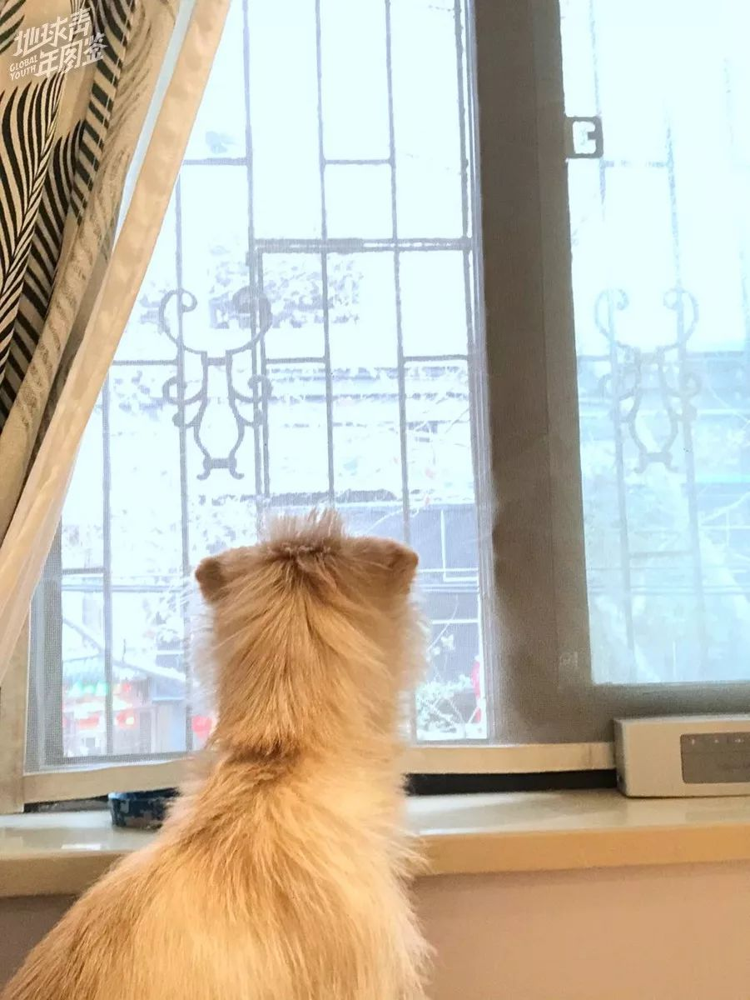
△ 家里的狗狗
因为疫情的潜伏期最多达十几天，我又频频出入高危区，所以我把所有聚会推掉，爸妈要给我送蔬菜也被我劝阻了。感觉自己被传染的几率还是蛮大的，最近一个人在家自行观察中。
这次疫情对工作肯定会有影响，但现在压根没心思去想。之前在高危区接触太多了，觉得能平安躲过去就很难得了。
最开始我还会出门遛狗，后来只在小区遛狗，再后来就开门让狗在走廊跑两步，现在门都不敢开。每天在家把电视打开看剧，说实话，也看不进去，除了吃饭睡觉，就是不停地刷新闻，看消息，刷着刷着，会哭一会儿，哭完了继续刷。
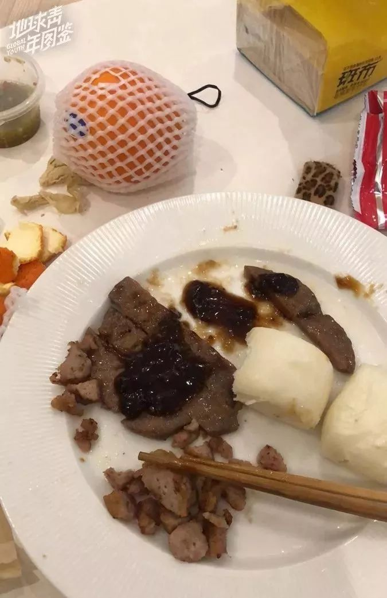
△ 在家的简餐
不过在这个节骨眼上，食欲依旧很好，想吃热干面想吃火锅，有食欲就是健康的证据吧。当然，每顿不敢吃太多，尽量量少但营养均衡。
对于现有的信息其实是有些悲观的，感觉在等一个“英雄”出现。但实际上如果事态发展初期得到好的监控和管理，我们可能不会像现在这样这么期待一个“英雄”。
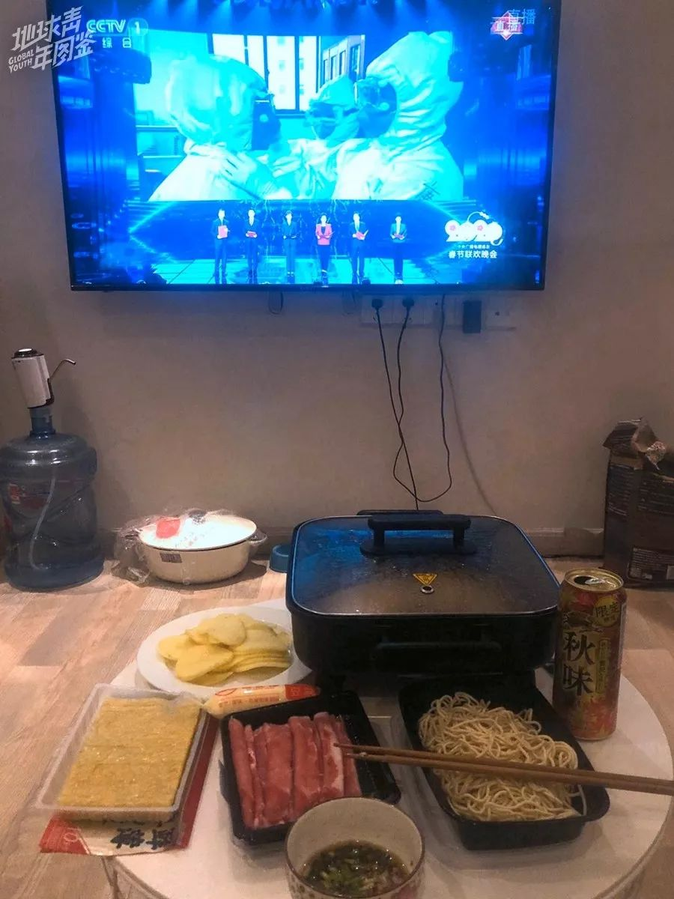
△ 除夕夜的火锅
除夕夜，我打开电视放春晚的节目，还准备了火锅，不过春晚是看不进去的，远程跟朋友视频聊天。用手机刷到一条自称“了解内部体系体质的人”发的微博，总算是看到了一点点希望。
原来的过年计划是和家人团聚，和喜欢的人一起逛年货，不过现实是只能一个人在家里过了除夕，这天也是我近期心理状态最差的一天。
互相陪伴着度过“特别”的新年

△ 家里贴了窗花
冰点（化名）25岁 分析师 家住汉阳区
18岁之前我一直生活在湖北襄阳，之后来到北京读书，现在在北京一家创业公司做分析师。我爸妈前几年搬到了武汉，所以我每年都会回武汉过年。
我早早地就定好了回武汉的车票。小年夜，世界还是一片祥和。我满脑袋都是这周只休一天的紧张，因为下周就要回家过年了，还有好多事情没有做完。

△ 家里冰箱囤放了食物
19号那天，有些令人不安的消息开始蔓延。大家都在讨论武汉肺炎，有些人发消息问我，过年还回家吗。那时我还没有当回事，我说再怎么样，家还是要回去的。
第二天早上醒来，铺天盖地的就都是武汉爆发肺炎的情况了。从这一天开始，所有的微信群像爆炸了一样，各种不知道真假的消息涌现。许多武汉及周边城市的同学、朋友们都开始讨论退票留守的事情。

△ 忙碌的爸妈
我看到了所有的消息，也劝说爸妈及时戴上了口罩，减少出门。那个时候开始有点慌，不是担心自己回家可能会被感染，是担心自己再回北京的时候会被大家“区别对待”。但我始终没有动摇过，我想回家和爸妈一起过年。
我们每年一直是一家三口聚在家里吃年夜饭，坐在沙发上喝茶、吃点心、抢红包、看春晚，这个很平常的流程，是一家人最重要的年终仪式。
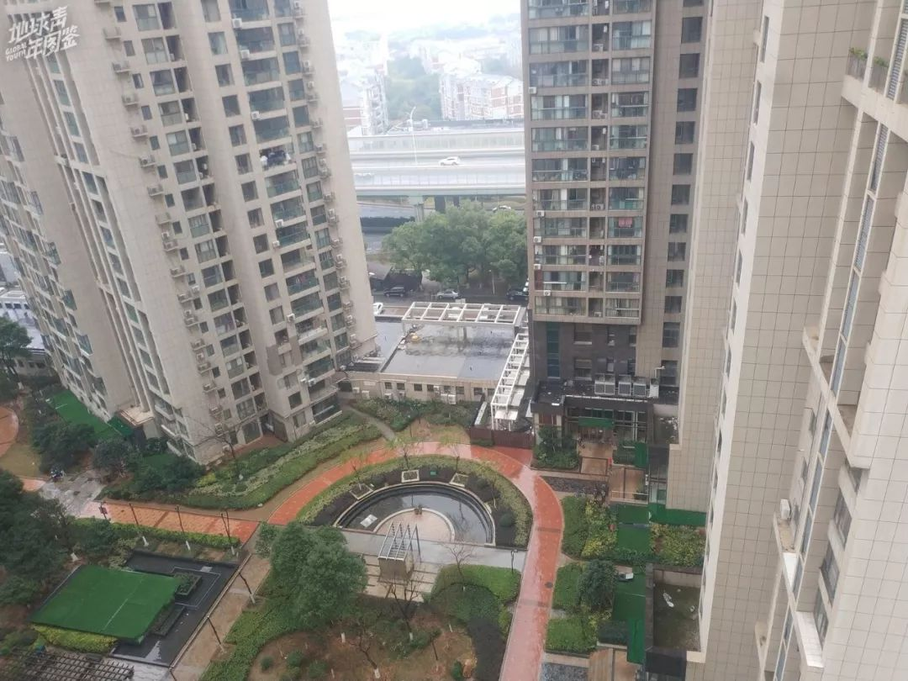
△ 小区楼下没有行人
其实我想得非常清楚，我的体质很好，而且我会做好防护、远离人群、时刻观察身体状况，保证自己的健康；如果真的不幸被感染，我一定会第一时间去医院，避免传给其他人。
可是在周围人的舆论面前，我仍然感觉自己像一个大逆不道的罪人。每当他们讨论起“武汉人”，我都会觉得是在指责我。在他们眼里，每个去过武汉的人都是随时可能爆发的“病毒炸弹”。我分不清大家的劝阻是关心我，还是关心他们自己。好在还是有一些朋友对我表示了理解。
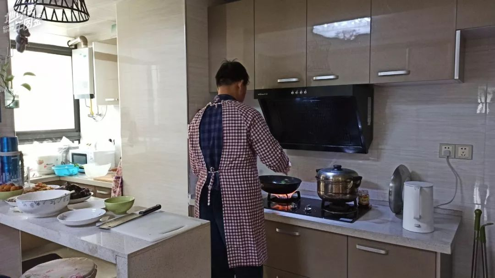
△ 做饭的爸爸
我在22号下午抵达武汉，第二天刚睡醒就收到好多朋友发来的消息，告诉我武汉封城了。听到封城的时候心情反而很平静，因为此时此刻我和父母在一起，而不是孤身留守北京，只能远程了解疫区里父母的情况。
我有很多朋友留在外地过年，他们只能转发一些新闻，劝父母带口罩。但我可以和父母在一起，互相陪伴着度过这个“特别”的新年。
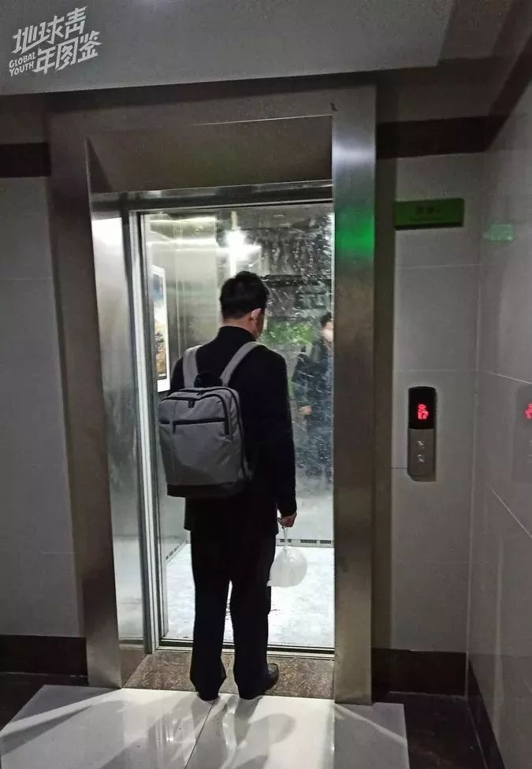
△ 大年三十，出发去上班的爸爸。
我爸是武汉一个货运站的民警，很久之前就被安排大年三十的晚上在车站值班，然后初一要在火车上值班，他们叫做“跑车”。于是，大年三十，我们一家三口就提前在中午吃了团年饭，然后送爸爸出门上班。
虽然武汉宣布封城了，但具体货运车次的停运消息一直没下来，直到除夕夜晚上，我和妈妈还有点担心，毕竟不确定车上会有多少人，会不会有疑似患者。好在我爸接到通知，初一货车停了，他值完班就可以回家了。
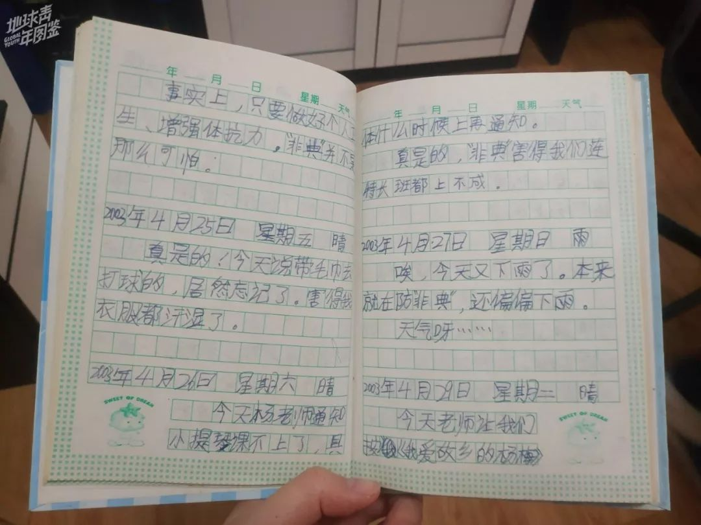
△ 我在“非典”时期写的日记
因为我从小是在襄阳长大的，我们一家人在武汉的亲戚也不多，原本就没有外出的打算，所以这两天就是安心在家里待着，哪里也没去。
这次的事情让很多人提到了17年前的SARS时期，但我没有什么印象。于是在家翻出来小时候的日记本，竟然真的找到了当年的日记。2003年非典爆发的时候，我九岁，小学三年级。那时候湖北不是重灾区，也没有停课什么的，所以印象不深。这次再翻到当年的日记，感觉“非典”没有对日常生活造成太大影响，但连小学生都意识到了“非典”，说明当时的宣传工作做得还是很好的。
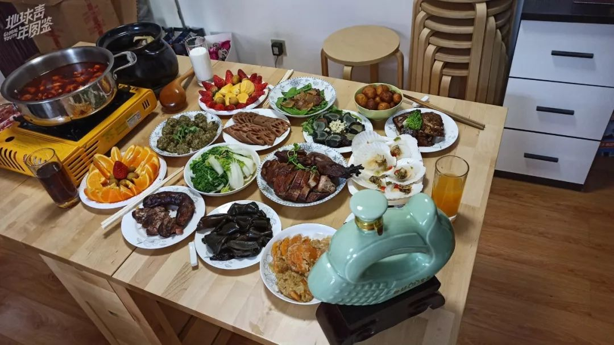
△ 年夜饭
今年的除夕之夜，原本是一家三口在家里吃年夜饭、看春晚，现在变成了我和妈妈两个人，各自看春晚、抢红包。但只要和家人在一起，除夕夜都是好过的。我早就给爸妈准备了红包，在跨过0点的时候亲手交给他们。
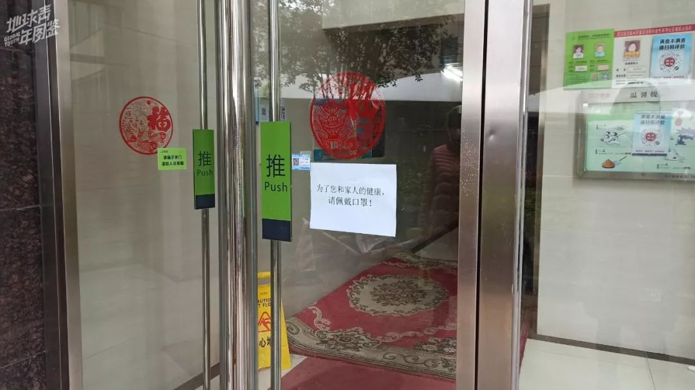
△ 单元楼门口的告示
目前而言，因为自己和家人都不太出门，所以不是特别担心会被感染。但有一些亲人是医护人员，已经连续工作很久了，有点担心他们的健康。我看到消息，整体的防疫情况应该是很艰难的，但我和家人作为疫区群众，少出门、做好防护、不在网络上传播流言和恐慌情绪，应该就是做好我们能做的事情了。
不知道后续回北京的行程会不会被改变。我回来之前想到可能返程存在变数，甚至还多装了两本书……就静观其变吧。不过还是非常担心自己回北京之后，会被合租的室友、同事、甚至一些朋友当成“病毒传染源”，避之不及，毕竟没有症状不代表没有被感染。还是很多人会有“你为什么要回武汉”之类的想法，我能理解大家的担忧，但还是希望大家可以互相理解吧。
期待全国人民都能互相理解，而不是一边说着“加油武汉”，一边又开地图炮抨击武汉人。期待生活可以尽快恢复正常吧，但这一定是个很漫长的过程。
虽然外部环境不安全，
但一家人每天都能在一起

△ 年三十，我在家看手机。
沛溪 30岁 自由摄影师 家住盘龙城经济开发区
我是湖北十堰人，是一名自由摄影师，在武汉经营着自己的摄影工作室，2020年是我第一次在武汉过年，恰好2019年我们搬了新家，年前家人们就决定在武汉过年。
然而不巧的是赶上了武汉疫情加重，家人1月20日就从十堰过来了，当天她们就已经看新闻说疫情好像加重，有些忧虑，所以在高铁上一路都是带着口罩。

△ 家里囤的口罩

△ 家里囤的蔬菜瓜果
1月23日封城那天，看到新闻说实话我心里慌，家人们互相告诫要带口罩，勤洗手，少出门。对于这次的疫情，我很担心，去趟超市都感觉自己像是去战场，人群稍微有点多我就有些不安，尽管大多数人都带着口罩。
封城之前我还带着妈妈们去家附近的连锁超市、商场购物。但到了封城当天，我们吓得连门都不敢出了，蜗居在家里，我清点了阳台上摆放的物资，扛2周没问题。

△ 大年三十，和家人一起吃午饭。
封城后我和家人几乎不出门，虽然外部环境不安全，但是我们一家人每天都能在一起，吃妈妈做的丰盛的菜肴，内心感觉得很暖。
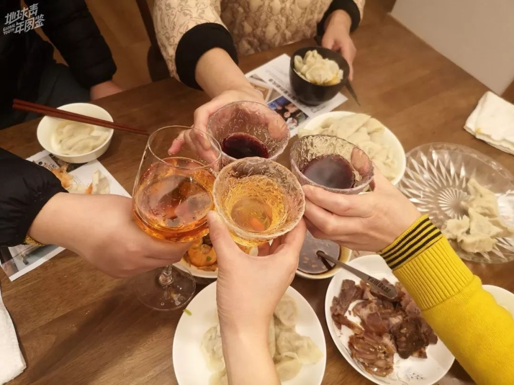
△ 年夜饭
除夕的晚上，我没有心情看春晚，尽管今年春晚有很多我喜欢的明星，但是一想到医院物资紧缺，奋斗在一线的白衣战士们得不到很好的资源配置，我就很着急。
这个年我过得很焦虑，很担心，心里很难受，除夕夜会是很多人的无眠之夜，只希望第二天早上醒来，会有好消息传来，武汉慢慢变好。
*图片均由受访者提供*
*作者 | 张恒、书尧、妮子、冰点、沛溪*
*编辑 | 图拉*
实习生 | 匡若彤
凤凰新闻客户端 凤凰网在人间工作室出品


新型肺炎疫情牵动人心，
《在人间》现面向全国网友征稿：
主题一：疫区影像日记
如果你身处疫区
请你用照片（视频）和文字记录
你所听闻和见到的一切
照片不少于3张
文字不少于300字
主题二：口罩全家福
请你拍下一家人戴口罩的合影
并注明拍摄时间、地点
另简述过年经历
不少于200字
投稿方式：微信联系人间君（zairenjianliving）

原文链接 备份链接 本视频为今年的年三十，武汉父母与身在外地的孩子 隔空互送新年祝福 年夜饭，是中国人最看重的家庭宴会。1月24日，武汉封城第二天，年三十，有23个武汉人给我们分享了他们的年夜饭。 @王启明： 今天是武汉封城的第二天，也是 …
原文链接 备份链接 昨天是武汉封城第一天，三明治紧急发起了每日书特别版《武汉日常》，邀请人在武汉和家乡在武汉的朋友，一起来用文字忠实记录他们在这个特殊时期的生活日常。 招募一经发出，就有近百位朋友迅速响应，其中有一路哭着坚持回家过年的北 …
原文链接 备份链接 🎧 点击上方图片，跳转「故事FM」小程序，收听真人讲述。记得添加「我的小程序」，一键收听全部故事哟！ 本来在春节前的最后一期节目里，我预告说 故事FM 会放假一周，节后回来再见。 但是这个春节啊，我们团队都无心过年，大 …
原文链接 备份链接 作者 | 薛芳 孙宏超 相欣 安然 马关夏 李越 编辑 | 康晓 出品｜深网·腾讯小满工作室 欢迎下载腾讯新闻APP，阅读更多优质资讯 平平安安就是年。 突袭而至的新病毒能阻止很多中国人在这个春节里团聚，但没有什么能阻 …
原文链接 备份链接 作者 | 王晓 出品 | 棱镜·腾讯小满工作室 欢迎下载腾讯新闻APP，阅读更多优质资讯 对于湖北人民来说，2020年的这个除夕夜太不平常了。 “药店大姐告诉我们，口罩绝不涨价，不发国难财，而且告知我们第二天早7点开 …